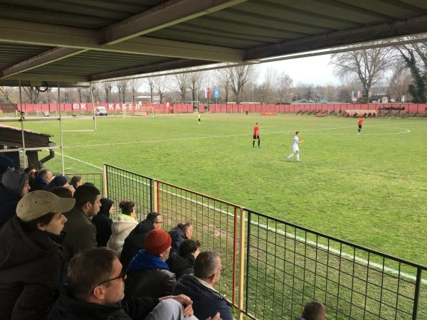

NAŠ KRAJ · SPORT
FK Kabel: klub koji su napravili radnici, a sačuvao kraj
Subotom popodne, kada se sa Fruškogorske čuje navijanje, svi na Limanu 2 znaju da igra Kabel. Stadion u Fruškogorskoj 36 deo je našeg kraja koliko i škola, park ili pijaca. Malo ko zna da je ovaj klub stariji od samog Limana.
FK Kabel osnovan je u proleće 1932. godine kao klub radnika novosadske fabrike "Kabel". Fabrika i dobrovoljni prilozi radnika obezbedili su prve lopte i dresove. Prvo igralište bilo je iza "Kulpina", a pre rata klub je igrao u najnižem rangu Novosadske lige. Kada su igralište oduzeli zbog gradnje zgrade finansijske uprave, Kabel je utakmice igrao kod FK Trgovački.
Rat je klub zatekao pred početak mađarske lige. Zbog političkih pritisaka Kabel se povukao i formalno je rasformiran, ali je rad nastavljen tajno, sve do oslobođenja. Obnovljen je 1945. godine. Godine 1947. kratko je nosio ime "Metalac", na inicijativu sindikata metalskih radnika, a onda se vratio svom imenu, onom koje i danas nosi.

Krajem četrdesetih klub je dobio stalno igralište. Bilo je to močvarno zemljište koje su radnici sami uredili zajedničkim akcijama. Na tom mestu Kabel igra i danas. Kada je oko njega nikao Liman, klub je postao deo novog naselja, a naselje je dobilo svoj klub.
Najveći uspeh u bivšoj Jugoslaviji stigao je u sezoni 1987/88, kada je Kabel igrao u Drugoj saveznoj ligi, protiv klubova kao što su Šibenik, Leotar i Spartak. Na taj nivo vratio se i od 1999. do 2002. Posle godina u nižim ligama, usledio je novi uspon: Kabel je 2018/19. osvojio Srpsku ligu Vojvodina i ušao u Prvu ligu Srbije. Tamo je 2020/21. zauzeo treće mesto, najbolji rezultat u svojoj istoriji. Posle ispadanja 2022, ponovo je osvojio Srpsku ligu Vojvodina u sezoni 2024/25 i vratio se u Prvu ligu Srbije.
Stadion danas ima oko 2.000 mesta, sa delimično natkrivenom zapadnom tribinom. Uređivan je krajem devedesetih, pa ponovo 2019, pred ulazak u Prvu ligu. Na njemu trenira i omladinska škola kluba, sa kategorijama od petlića do omladinaca, pa mnogi klinci sa Limana prve korake u fudbalu prave baš ovde. Prvi probni trening je besplatan.
Kabel je retka stvar u današnjem fudbalu: klub koji je počeo od radnika i dobrovoljnih priloga, igrao kroz rat u tajnosti i uredio teren na močvari sopstvenim rukama. Takvi klubovi ne pripadaju samo upravi. Pripadaju kraju.
Igrali ste za Kabel, ili ste kao klinac preskakali ogradu da gledate utakmicu? Pošaljite nam fotografiju ili priču.
Pošalji fotografiju ili sećanje